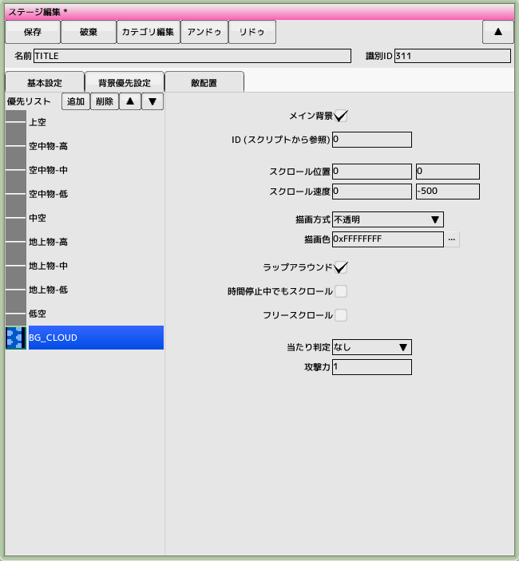
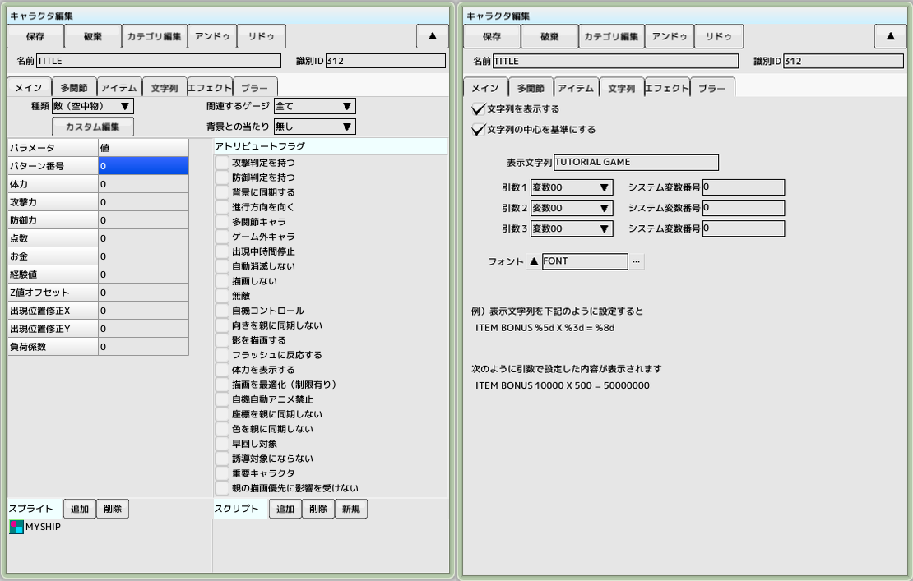
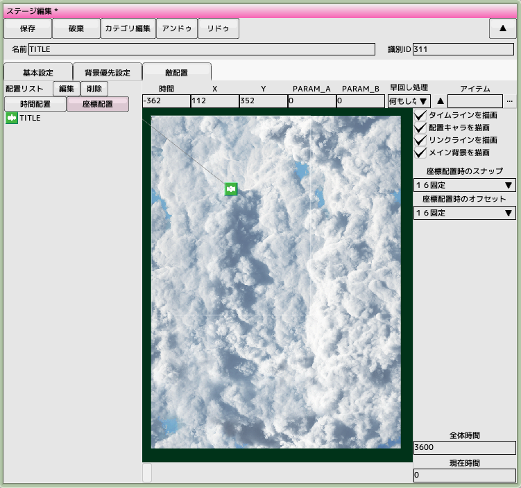
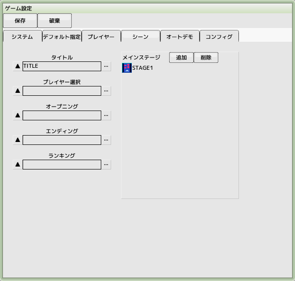

■元のページへ戻る
■元のページへ戻る
13.タイトル画面を作成する
ゲームを起動後に表される画面を作成します

タイトル用のステージを作成します
背景優先設定に以前作成した背景を追加します
右図のように設定して背景が無限スクロールするようにします
メイン背景のチェックを忘れないでください

タイトル用の文字列を作成します
タイトルロゴ用のキャラクタを作成します
画像を用意してもいいですが、ここではフォントを使います
スプライトは使用しませんが、空のままだと赤い四角が表示されるのでダミーを登録しておきます
文字列タブを開いて右図のように表示文字列を設定します

作成したタイトルロゴをステージへ配置します
座標配置で適当な位置へ'TITLE'を設置します
時間配置だと画面上方に隠れてしまうので注意してください

ゲーム設定のシーンタブ、タイトルへ登録します
通しプレイでタイトルからステージ１へ遷移することを確認します
■ページ上部へ戻る